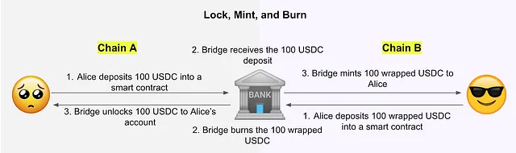

Possibile titolo: "Sicurezza negli smart contract cross-chain: sfide e possibili soluzioni".
Symposium
Obiettivo di questo seminario:
- Capire le basi della tecnologia blockchain e la sua rilevanza nella decentralized finance (DeFi).
- Studiare le vulnerabilità più comuni nello sviluppo di smart contract.
- Scoprire come l'analisi statica insieme ad altre tecniche può aiutare ad identificare potenziali vulnerabilità e mitigare rischi sugli smart contract cross-chain (aka bridge).
Introduzione
Prima di immergerci nel mondo degli smart contract cross-chain, facciamo un passo indietro ed esploriamo in cosa consiste la tecnologia blockchain.
In parole povere, una blockchain è un registro digitale decentralizzato che registra le transazioni su una rete di computer. La kill-feature della blockchain risiede nella sua natura trasparente e a prova di manomissione, che consente transazioni peer-to-peer sicure senza la necessità di intermediari come banche o governi.
Ma ecco il punto: non tutte le blockchain sono create uguali. Infatti, ci sono molte diverse piattaforme blockchain, ognuna con le proprie caratteristiche e casi d'uso unici. Ad esempio, Ethereum è una popolare piattaforma blockchain che consente agli sviluppatori di distribuire smart contract, programmi che si eseguono in modo autonomo quando si verifica una determinata condizione.
Poiché questi contratti sono archiviati su una blockchain, sono anche immutabili, il che significa che una volta distribuiti, non possono essere modificati o eliminati.
Ora, questa immutabilità è sia un vantaggio che uno svantaggio. Da un lato, significa che gli smart contract possono fornire un elevato livello di fiducia e garanzia per le parti coinvolte in una transazione. Ma dall'altro lato, significa anche che eventuali errori o bug in questi contratti possono avere conseguenze di vasta portata: dopotutto, se un contratto intelligente contiene un errore logico, potrebbe potenzialmente portare a significative perdite finanziarie o danni alla reputazione.
Ecco perché la sicurezza è un aspetto così critico nello sviluppo dgli smart contract. Quando si distribuisce un contratto intelligente su una blockchain come Ethereum, gli sviluppatori devono essere assolutamente certi che il loro codice sia privo di errori e bug, altrimenti le conseguenze potrebbero essere gravi.
Una delle sfide significative nel lavorare con più reti blockchain è l'incapacità di trasferire in modo nativo asset tra di loro. Se hai un asset, come Ether (ETH) su Ethereum, non puoi semplicemente spostarlo ad un'altra blockchain, come la rete di Solana. Questo perché ogni blockchain ha la propria tecnologia e infrastruttura sottostante unica, rendendo impossibile il trasferimento diretto.
Per risolvere questo problema, sono stati introdotti gli smart contract cross-chain, detti anche bridge, noti come soluzione di interoperabilità, per facilitare il movimento di asset tra blockchain. I bridge fungono da intermediario, consentendo agli utenti di convertire i propri asset in un formato standardizzato che può essere trasferito su diverse reti blockchain.
Questa soluzione offre nuove grandi possibilità, ma anche grandi responsabilità, in quanto la posta in gioco è più alta che mai.
In questo seminario esploreremo le sfide e le opportunità che circondano questi sistemi complessi e discuteremo di come l'analisi statica e altre tecniche possano contribuire a garantirne l'integrità e l'affidabilità.
Sezione 1: Funzionamento dei bridge
Come accennato poco fa, una delle sfide più significative nel lavorare con più reti blockchain è l'incapacità di interagire senza problemi tra di esse. Questo problema nasce dal fatto che diverse piattaforme blockchain hanno i propri protocolli, architetture e linguaggi di programmazione unici. Di conseguenza, costruire ponti tra queste reti è fondamentale per facilitare il flusso di dati, asset o smart contract.
Lock and Mint bridge
I bridge lock and mint sono un tipo specifico di bridge che facilita il trasferimento di asset tra diverse blockchain. Come suggerisce il nome, questi bridge prima bloccano ("lock") l'asset originale in un contratto "relayer" designato sulla prima chain e poi coniano ("mint") una copia dell'asset sulla seconda chain. Questo processo assicura che l'asset originale rimanga protetto mentre viene creata una replica sulla chain di destinazione, consentendo agli utenti di utilizzare la funzionalità dell'asset all'interno dell'ecosistema della seconda chain.

Per abilitare questa funzionalità dei bridge lock and mint, la comunicazione back-end svolge un ruolo fondamentale. Comporta il tracciamento degli eventi emessi dalla prima chain e l'esecuzione delle funzioni corrispondenti sui contratti distribuiti sulla seconda chain. Questa comunicazione assicura la sincronizzazione e la coerenza tra le due chain, consentendo il trasferimento senza interruzioni degli asset.
Quindi ricapitolando, un bridge cross-chain può essere diviso in tre parti: source chain, cross-chain relayer e destination chain. Inoltre, il bridge cross-chain "deploya" gli smart contract sulla source chain e sulla destination chain.
Sezione 2: vulnerabilità cross-chain
Esistono diverse superfici di attacco dei bridge cross-chain. I più famosi sono: Lato server:
- Front-end phishing: riguarda il cross-chain relayer. Se un aggressore ottiene l'accesso al front-end dei bridge, può ingannare gli utenti inducendoli a trasferire i loro fondi, con conseguente furto dei fondi degli utenti.
- Mishandling events: Il server recupererà e analizzerà gli eventi dalle transazioni. Se questi eventi vengono gestiti in modo non corretto, i bridge potrebbero eseguire azioni inappropriate, come inviare più denaro agli utenti di quanto desiderato. Ad esempio, se un evento di deposito registra il trasferimento di 10 ETH nella blockchain di origine viene erroneamente trattato come un trasferimento di 100 ETH, i bridge invieranno 100 ETH wrappati all'utente nella blockchain di destinazione.
Lato smart contract:
- Problematic mint: Una volta che i token sono bloccati nella blockchain di origine, i bridge conieranno token wrappati nella blockchain di destinazione. Tuttavia, se la prova non viene convalidata in modo appropriato, gli aggressori possono coniare più token del desiderato.
- Fake burn: Per riportare i token nella blockchain di origine, gli utenti devono "bruciare" i token wrappati nella blockchain di destinazione. Se ci sono alcuni problemi di controllo dei permessi che consentono agli utenti di evitare il burn, gli attacchi possono verificarsi a causa di falsi burn in cui gli aggressori non bruciano nulla ma ottengono le prove di avvenuto burn.
- Prelievo ripetuto / illimitato: La prova di rilascio necessita di convalida prima di consentire agli utenti di prelevare i token. Tuttavia, se la prova può essere utilizzata più volte o falsificata, gli utenti possono rubare i token fino a quando le risorse non vengono esaurite.
- Vulnerabilità nel codice: Ad esempio sfruttando attacchi di rientranza. L'attacco di reentrancy avviene quando il contratto della vittima richiama un contratto dannoso che richiama la funzione originale nel contratto della vittima, per rubare denaro.
- Problemi logici: Sono causati da errori logici negli smart contract (e.g., variabile inizializzata nel modo errato).
Sezione 3: SmartAxe - un primo case study
SmartAxe è un framework innovativo progettato per rilevare vulnerabilità negli smart contract utilizzati dai bridge cross-chain. Si distingue come il primo strumento capace di identificare tali vulnerabilità sfruttando l’analisi statica a livello di bytecode. Grazie a SmartAxe, è possibile verificare automaticamente la sicurezza delle applicazioni di bridge cross-chain prima del loro rilascio, mitigando i rischi e rafforzandone la protezione.
Le vulnerabilità cross-chain (CCV) affrontate da SmartAxe si dividono in due categorie principali:
- Controllo degli accessi incompleto: gli smart contract dei bridge potrebbero non implementare controlli di sicurezza adeguati o potrebbero includere errori nei meccanismi di controllo degli accessi.
- Inconsistenza semantica tra le chain: è fondamentale che la semantica del programma sia coerente tra la chain di origine e quella di destinazione, ad esempio per quanto riguarda il tipo e la quantità degli asset trasferiti.
Come funziona SmartAxe:
- Analisi del flusso di controllo: SmartAxe estrae i flussi di controllo dei contratti smart di entrambe le chain utilizzando strumenti esistenti, come SmartDagger, per costruire il control flow graph (CFG) dei contratti di origine e di destinazione.
- Rilevamento dei problemi nel controllo degli accessi: sfruttando i dati del CFG, SmartAxe individua i vincoli di controllo degli accessi e le risorse coinvolte. Utilizzando tecniche di inferenza probabilistica, associa risorse e controlli di sicurezza, segnalando eventuali funzioni vulnerabili con controlli di accesso incompleti.
- Rilevamento delle incoerenze semantiche: SmartAxe allinea i flussi di controllo tra le due chain per costruire un cross-chain control flow graph (xCFG) e un cross-chain data flow graph (xDFG). Questi grafici vengono analizzati per identificare funzioni vulnerabili che presentano incoerenze semantiche. In pratica, collega i punti di uscita (opcode come CALL, STATICCALL, DELEGATECALL) dei contratti di origine ai punti di ingresso di quelli di destinazione per generare un xCFG e un xDFG.
- Analisi delle tracce vulnerabili: infine, SmartAxe esegue una taint analysis per tracciare le interazioni tra funzioni vulnerabili e variabili di stato globali. Se una funzione vulnerabile influisce su variabili globali tramite operazioni come SSTORE, viene segnalata come potenziale rischio.
Valutazione sperimentale
Per valutare l’efficacia di SmartAxe, gli autori hanno condotto una valutazione sperimentale utilizzando due dataset:
- Dataset di CCV etichettate manualmente: bug inseriti manualmente per testare specifiche vulnerabilità.
- Dataset su larga scala: contratti intelligenti reali provenienti dal mondo reale.
SmartAxe ha raggiunto un’elevata precisione (84,95%) e un alto richiamo (89,77%) nel rilevare le vulnerabilità cross-chain.
Analisi dei falsi positivi e dei falsi negativi:
- Falsi Positivi: causati principalmente dalle limitazioni dello strumento di analisi statica (SmartDagger) utilizzato per estrarre il flusso di controllo.
- Falsi Negativi: derivano dal fatto che SmartAxe non considera i controlli di accesso basati su query on-chain.
Conclusioni
SmartAxe è il primo framework capace di rilevare vulnerabilità cross-chain utilizzando l’analisi statica a livello di bytecode. Questo approccio innovativo consente di identificare vulnerabilità complesse direttamente dalla rappresentazione binaria dei contratti intelligenti, aprendo nuove strade per migliorare la sicurezza dei bridge cross-chain e delle applicazioni blockchain.
Limitazioni di SmartAxe:
- La completezza di SmartAxe è minacciata dall'imprecisione dei dati di base prodotti da SmartDagger.
- La solidità di SmartAxe è influenzata dall'incertezza del metodo probabilistico utilizzato per l'allocazione delle risorse.
- Attualmente non supporta l'analisi di blockchain non EVM.
- Il codice non è open source.